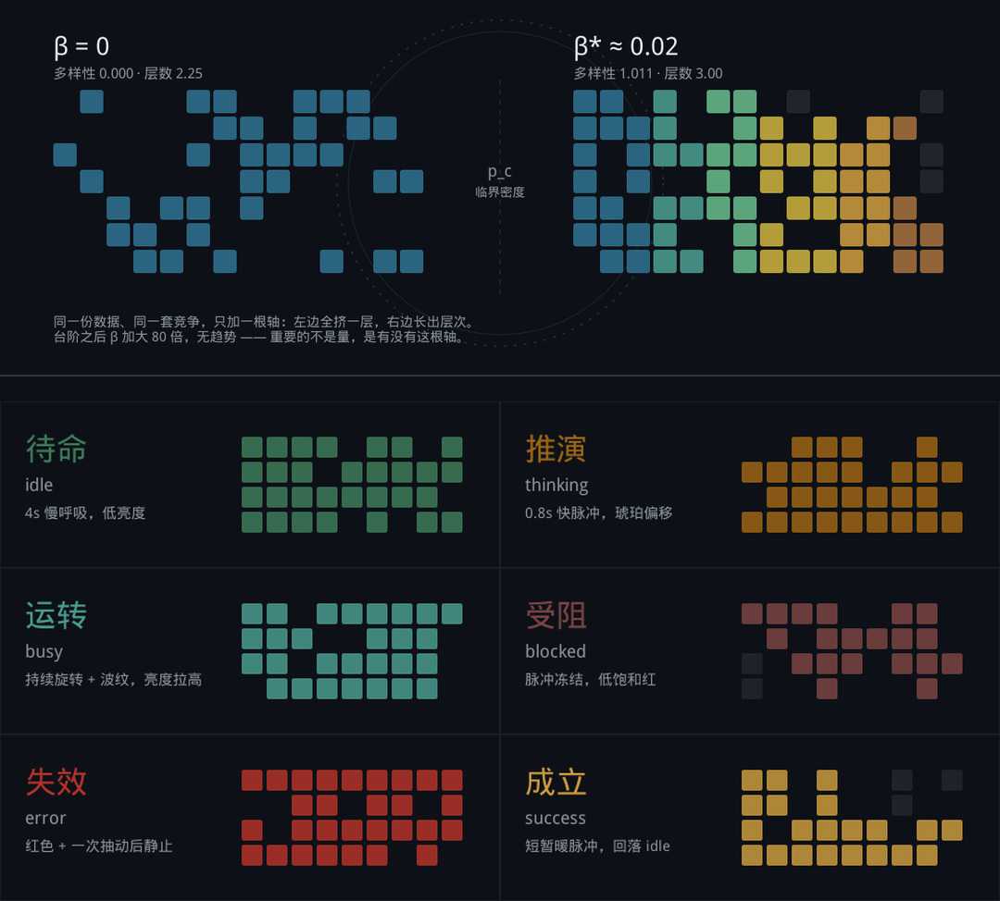

一个数字胚胎从单细胞发育到器官的过程中，什么时候开始长出层次？
答案：拐点 β* ≈ 0.02——独特性只要 2%，种群就从"全挤一层"变成"分层共存"。

左 p=0.35：只有孤立小岛，全同色。右 p=0.65：贯通簇出现，六色分层。
同构于 211 号实测——渗流是唯一同时命中阈值 T + 平台 P + 不可逆 I 三个结构签名的母题。

右边那片逐格点亮的过程，就是台阶。

idle 冷绿 4s 慢呼吸 · thinking 琥珀 0.8s · busy 高亮流动 · blocked 低饱和冻结 · error 抽一下停 · success 暖脉冲回落。
都绑在实测上：blocked 刻意低饱和（受阻≠失败），success 不常驻（台阶后加大 80 倍无趋势）。
拖 β 滑块看拐点，或粘贴任意文本实时算字符熵与独特三元组占比。